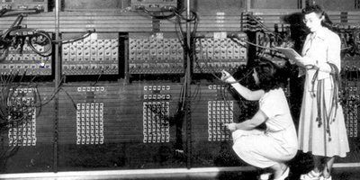
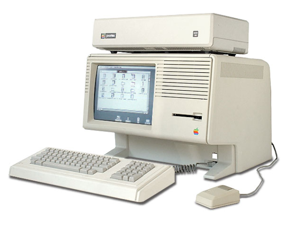
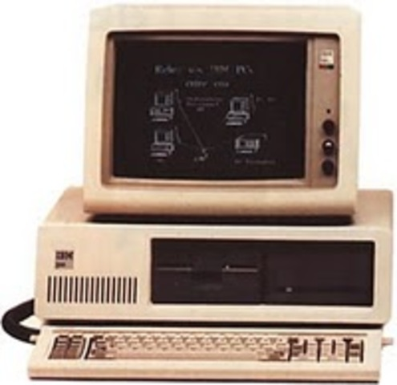
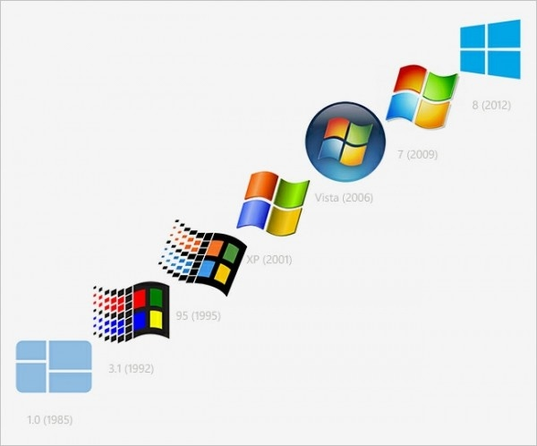

La Ingeniería del Software, según R.Pressman, es “Una disciplina que integra métodos, herramientas y procedimientos para el desarrollo de SW de computador”. Es decir, es una disciplina que intenta racionalizar el proceso de desarrollo de software y establecer unas pautas a seguir para el desarrollo que minimicen tiempo, esfuerzo, y coste de desarrollo y maximicen la calidad del software.
Durante los primeros años de desarrollo de las computadoras, el hardware sufrió continuos cambios, mientras que el software se contemplaba simplemente como un agregado. La programación de computadoras era un arte para el que existían pocos métodos sistemáticos y el desarrollo del software se realizaba virtualmente sin ninguna planificación (los costos crecían y los planes eran un descalabro).

La segunda era en la evolución de los sistemas computacionales se extiende desde la mitad de la década de los sesenta hasta finales de los setenta, La multiprogramación y los sistemas multiusuario introdujeron nuevos conceptos de interacción hombre-máquina. Las técnicas interactivas abrieron un nuevo mundo de aplicaciones y nuevos niveles de complejidad del hardware y del software.

La tercera era en la evolución de los sistemas computacionales, comenzó a mediados de los setenta . El procesamiento distribuido (múltiples computadoras, cada una ejecutando funciones concurrentemente y comunicándose con alguna otra) incrementó notablemente la complejidad de los sistemas informáticos. Las redes de área local y de área global, las comunicaciones digitales de gran ancho de banda y la creciente demanda de acceso "instantáneo" a los datos, supusieron una fuerte presión sobre los desarrolladores del software. Se produce la llegada y el amplio uso de los microprocesadores y las computadoras personales.

La cuarta era del software se aleja de las computadoras individuales y de los programas de computadoras, dirigiéndose al impacto colectivo de las computadoras y del software. Potentes máquinas personales controladas por sistemas operativos sofisticados, en redes globales y locales, acompañadas por aplicaciones de software avanzadas se han convertido en la norma. Cambia la arquitectura informática de entornos centralizado de grandes computadores a entornos descentralizados cliente / servidor. De hecho Internet se puede observar como un software al que pueden acceder usuarios individuales. La cuarta era del software está enfocada a las tecnologías orientadas a los objetos y están desplazando rápidamente a enfoques de desarrollo de software más convencionales en muchas áreas de aplicación.

1968: Surge la crisis del software pues el proceso de desarrollo de software sobrepasa los costos y el tiempo estimados y tiene demasiadas fallas. Se acuña el nombre de Ingeniería de software.
1969 - 1971: Se establecen los primeros principios como resultado de la investigación en buenas prácticas de programación. Tales como: Diseño descendente (top-down), Refinamiento sucesivo, Modularidad, Surgen los lenguajes estructurados y la noción de desarrolladores de software dirigidos por un líder.
1972 - 1973: Surge la programación estructurada y el concepto de estilo de programación. Aparece el concepto de ciclo de vida en el desarrollo de software. Se proponen ayudas para la administración y de apoyo en el desarrollo.
1974 - 1975: Se inicia el manejo de la noción de confiabilidad y calidad del software. Se inician las pruebas sistemáticas, la noción de corrección formal, modelos de tolerancia a fallas y confiabilidad total.
1976 - 1977: Se pone atención a las fases anteriores a la codificación como análisis de requerimientos, especificación y diseño. Surgen las técnicas como abstracción y descomposición modular. Se hacen esfuerzos para integrar y validar las fases sucesivas del desarrollo.
1978 -1980: Incremento en el uso de herramientas automatizadas de desarrollo de software. Se llevan a cabo cursos de ingeniería de software. Los principios desarrollados en 69 a 71 se usan masivamente en la industria del software.
1980 - 1985: Se inician las herramientas automatizadas para cada fase del ciclo de vida siguiendo la programación estructurada.
1986 - 1995: Aparece el paradigma orientado a objetos para el desarrollo de software grande. Promueve conceptos como la abstracción, la herencia el reuso. Se inicia el uso masivo de técnicas automatizadas de desarrollo de software.
1995-2003: La evaluación de los procesos evita especificaciones incompletas o anómalas, la aplicación incorrecta de metodologías, etc. Para ello se utilizan distintos modelos de madurez de procesos que tienen como objetivo apoyar distintas estrategias de desarrollo y evaluación para así lograr una mejora continua en los productos.
La crisis del software son los problemas que se presentaron durante el desarrollo del software especialmente fue marcada por los excesos de costos, la escasa fiabilidad, la insatisfacción de los usuarios y los horarios de tiempos., mejor conocidos como "síntomas" de la crisis de software. Esto provocó grandes pérdidas en la década de los 70´s sobre el desarrollo de software, dando como resultado una nueva disciplina llamada "Ingeniería del Software" que abarca los aspectos técnicos del software y la gestión de datos. Desde el inicio se ha considerado a la tecnología como parte del problema pero también como solución además de tratar de hacer una "programación estructurada" provocando que los ingenieros de software progresen hasta el punto de que muchos temas importantes se adapten a la tecnología actual ya que ese es uno de los problemas principales al tener nuevo hardware y el software es relativamente viejo.
En la actualidad en el proceso de desarrollo de software se sugiere involucrar a los usuarios potenciales con el objetivo de obtener un producto que satisfaga las expectativas que emergen de las necesidades de ellos; por esto, en la construcción de herramientas computacionales con orientación didáctica es relevante considerar las habilidades de los estudiantes, así como definir en lo posible el estilo de aprendizaje con el que se identifican y con esta información planificar actividades que integren aspectos que propicien una mejor comprensión del tema o curso que se desea apoyar.